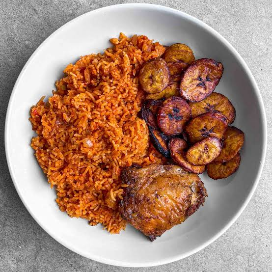

FRESHLY MADE. FULL OF FLAVOUR.
Your favourites.
Your kind of lunch.
Order ahead. Skip the queue.
Made with love in Abuja ↗
A taste of home.Veejay Foods
Open for pickupNigerian favourites · Rice & meals · Pastries · Drinks
✓ Pickup only